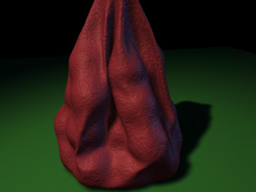
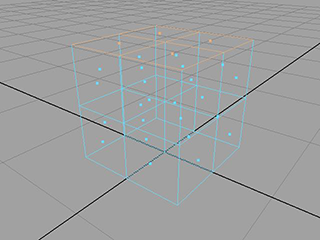
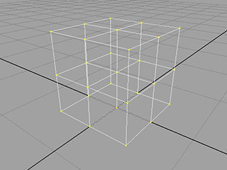
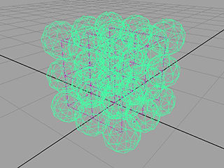
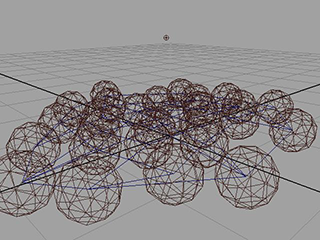
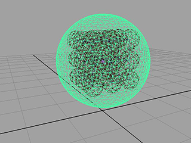
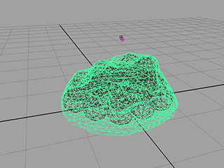
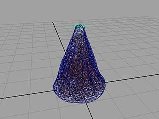

该示例将演示如何从单个 nCloth 袋和许多粒子创建一袋大理石。
创建大理石
将首先创建许多 nCloth 大理石。
为大理石生成网格
- 在“多边形”(Polygons)菜单集中，选择“创建 > 多边形基本体 > 平面”(Create > Polygon Primitives > Plane) >
 。
。 “多边形平面选项”(Polygon Plane Options)窗口将出现。
- 选择“编辑 > 重置设置”(Edit > Reset Settings)。
- 按如下所示设定平面选项：
- 宽度分段数(Width divisions)：2
- 高度分段数(Height divisions)：2
- 单击“创建”(Create)。
Maya 创建以原点为中心的平面。
- 选择编辑网格 > 挤出(Edit Mesh > Extrude)
- 在“属性编辑器”(Attribute Editor)中，选择 polyExtrudeFace1 选项卡并输入以下内容：
- 分段(Divisions)：2
- 局部平移(Local Translate)：0, 0, 1
Maya 会基于原始平面生成一个立方体。
 - 选择编辑网格 > 合并(Edit Mesh > Merge)。 
-
 )，然后选择“对象模式”(Object Mode)。
)，然后选择“对象模式”(Object Mode)。 - 选择立方体。
- 在 FX 菜单集中，选择“nCloth > 创建 nCloth”(nCloth > Create nCloth)。
- 打开“属性编辑器”(Attribute Editor)。
- 在“碰撞”(Collisions)区域中，调整下列属性：
- 厚度(Thickness)：0.25
- 解算器显示(Solver Display)：碰撞厚度(Collision Thickness)
- 碰撞标志(Collision Flag)：顶点(Vertex)
- 自碰撞标志(Self Collision Flag)：顶点(Vertex)
nCloth 现在显示为许多碰撞粒子。
 - 在“动力学特性”(Dynamic Properties)区域中，调整下列属性：
- 拉伸阻力(Stretch Resistance)：0
- 压缩阻力(Compression Resistance)：0
- 弯曲阻力(Bend Resistance)：0
- 升力(Lift)：0.0
- 切向阻力(Tangential Drag)：1.0
- 选择 nucleus1 选项卡并启用“使用平面”(Use Plane)。
- 在场景视图中，选择 nCloth 并在地平面上方对其进行平移。如果需要，还可以对其进行旋转。
- 播放模拟。
布料像一堆大理石一样落下。

创建袋
若要完成模拟，需要隐藏 nCloth 大理石并创建袋。
隐藏布料网格
- 在“属性编辑器”(Attribute Editor)中，选择 outputCloth1 选项卡。
- 在“渲染统计信息”(Render Stats)区域中，按如下所示调整属性：
- 投射阴影(Cast Shadows)：禁用(off)
- 运动模糊(Motion Blur)：禁用(off)
- 主可见性(Primary Visibility)：禁用(off)
- 在反射中可见(Visible in Reflections)：禁用(off)
- 在折射中可见(Visible in Refractions)：禁用(off)
- 在“属性编辑器”(Attribute Editor)中，选择“对象显示”(Object Display)。
- 在“绘制覆盖”(Drawing Overrides)区域中，按如下所示调整属性：
- ObjectDisplay：绘制覆盖(Drawing Overrides)
- 启用覆盖(Enable Overrides)：启用(on)
- 细节级别(Level Of Detail)：边界框(Bounding Box)
nCloth 大理石不再显示在场景视图或渲染视图中。
对大理石袋建模
- 在“多边形”(Polygons)菜单集中，选择“创建 > 多边形基本体 > 柏拉图多面体”(Create > Polygon Primitives > Platonic Solids) > 。
“多边形柏拉图多面体选项”(Polygon Platonic Solid Options)窗口将出现。
- 将“柏拉图多面体类型”(platonic type)设定为“二十面体”(Icosahedron)并单击“创建”(Create)。
- 选择网格 > 平滑(Mesh > Smooth)。
二十面体变得更类似于球形。
- 在“属性编辑器”(Attribute Editor)中，选择 polySmoothface1 选项卡。
- 按如下所示调整属性：
- 方法(Method)：线性(Linear)
- DivisionLevels：1
- 每个面的分段数(Divisions per Face)：10
- 推动强度(Push Strength)：1.0
- 圆度(Roundness)：1.45
- 在“通道盒”(Channel Box)中，按如下所示调整通道值：
- TranslateY：0.848
- ScaleX：1.5
- ScaleY：1.5
- ScaleZ：1.5 
- 在 FX 菜单集中，选择“nCloth > 创建 nCloth”(nCloth > Create nCloth)。
- 播放模拟。
大理石袋降落到地面。

约束袋
为使袋保持挂起状态，需要约束其位置。
约束袋
- )，然后从显示的标记菜单中选择“顶点”(Vertex)。
- 在袋的顶部选择一些顶点。
- 选择nConstraint > 变换(nConstraint > Transform)。
- 播放模拟。
袋的顶部现在保持在原位，而大理石会压低底部。

调整袋的压力
渲染该场景时，您可能希望大理石更明显地透过袋。可以通过调整袋的压力设置来实现此目的。
增强通过袋显示的大理石
- 选择袋。
- 在“属性编辑器”(Attribute Editor)中，选择 nClothShape2 选项卡。
- 在“压力”(Pressure)区域中，将“压力”(Pressure)设定为 -0.5。
- 播放模拟。
随着大理石降落空气从袋中释放出来，从而可以通过袋更清晰地显示出大理石。
全速设置袋的动画
- 转到播放范围的开始。
- 选择袋，然后选择“nCache > 创建新缓存 > nObject”(nCache > Create New Cache > nObject)。
Maya 会自动播放 nCloth 模拟并将其作为缓存保存到磁盘。
- 播放模拟。
全速播放模拟。